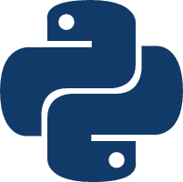

<!DOCTYPE html>
<html lang="en">

<head>
  <meta charset="UTF-8">
  <meta name="viewport" content="width=device-width, initial-scale=1.0">
  <meta http-equiv="X-UA-Compatible" content="ie=edge">
  <link rel="stylesheet" href="../css/normalize.css">
  <link rel="stylesheet" href="../css/styles/agate.css">
  <link rel="stylesheet" href="../css/dark.css">
  <script src="../js/jquery-3.2.1-compressed.js"></script>
  <script src="../js/highlight.pack.js"></script>
  <script src="../js/sidebar.js"></script>
  <title>Django</title>
</head>

<body>
  <aside id="sidebar">
    <section id="catalog">
      
      目录
    </section>
  </aside>
  <div id="showCatalog">
    
  </div>
  <article id="container">
    <hgroup>
      <h1 id="title">Django</h1>
    </hgroup>
    <section>
      <h2>安装</h2>
      <p>
        <h3>使用 pip 安装 django</h3>
        <pre><code class="shell">
$ pip install django
        </code></pre>
        <h3>搭建项目</h3>
        通过指令自动初始化项目。
        <pre><code class="shell">
$ django-admin startproject 项目名
        </code></pre>
        该命令会创建一个项目模板，其目录结构为：
        <div id="catalogFrame">
          项目名：该名字仅是目录名，后续可以进行任意修改<br>
          <div>
            manage.py<br>
            项目名：python 包名，后续使用 "项目名.xxx" 来引入该包下的模块<br>
            <div>
              __init__.py<br>
              settings.py：项目配置文件<br>
              urls.py：根路由配置文件<br>
              wsgi.py<br>
            </div>
          </div>
        </div>
        <h3>新增应用</h3>
        django 默认自带以下应用，在 settings.py 的 INSTALLED_APP 中可进行增删：
        <ul>
          <li>admin：提供管理员界面来管理数据库</li>
          <li>auth：认证系统</li>
          <li>contenttypes</li>
          <li>sessions：session 管理</li>
          <li>messages：消息管理</li>
          <li>staticfiles：数据统计</li>
        </ul>
        我们可以通过命令行方式为该项目（project）添加应用（app）。
        <pre><code class="shell">
$ python manage.py startapp 应用名
        </code></pre>
        <h3>启动服务器</h3>
        启动服务，默认为 8000 端口。也可以通过参数指定端口。
        <pre><code class="shell">
$ python manage.py runserver [端口号]
        </code></pre>
        默认不允许外网访问，可以通过配置 settings.py 的 ALLOWED_HOSTS 来允许部分 IP 访问，如果设置为<span class="different">*</span>则表示允许任何来源访问。
        <pre><code class="python">
ALLOWED_HOSTS = [
  '*',
]
        </code></pre>
        然后在启动的时候指定 ip 为 0（等价于 0.0.0.0）。
        <pre><code class="shell">
$ python manage.py runserver 0:端口
        </code></pre>
      </p>
    </section>
    <section>
      <h2>路由</h2>
      <p>
        URL 路径从根 urls.py 开始拼接，根 urls.py 文件通过查看 settings.py 文件获得。
        <pre><code class="python">
ROOT_URLCONF = 'urls'
        </code></pre>
        在应用（比如 app）下新增 urls.py 文件，编辑 urls.py 文件：
        <pre><code class="python">
# 根 urls.py
from django.conf.urls import url, include;
urlpatterns = [
  url(r'^app/', include('app.urls')),
];

# app/urls.py
from django.conf.urls import url;
from . import views;
urlpatterns = [
  url(r'^path/$', views.index, name = 'path'),
];

        </code></pre>
        这种情况访问如果 /app/path/ ，就会将访问到 app 项目下的 views.py 的 index 函数。其后的<span class="different">name =
          'path'</span>表示该条路由别名是<span class="different"> path </span>，我们可以在视图层通过别名来引用。
        <pre><code class="python">
&lt;a href="{% url 'path' %}"&gt;path&lt;/a&gt;
        </code></pre>
      </p>
    </section>
    <section>
      <h2>静态资源</h2>
      <p>
        <h3>开发环境</h3>
        settings.py 的 DEBUG 为 True 时，在上一节（路由）的前提下，在 app 目录下添加 static 目录，该目录下的所有文件作为静态资源，可以被直接访问，比如存在
        app/static/style.css，那么可以访问 URL 地址<span class="different">/static/style.css</span>来获取资源。
        <h3>生产环境</h3>
        settings.py 的 DEBUG 为 False 时，为了效率和安全，上面的方法将无效（静态资源 404），这时最好启动一个 nginx 服务器来专门处理静态资源，启动 nginx 之前我们得先把所有资源收集起来，配置
        settings.py：
        <pre><code class="python">
STATIC_URL = '/static/'
STATIC_ROOT = ’/www/static/‘
STATICFILES_DIRS = [
  os.path.join(BASE_DIR, "app/static"),
]
        </code></pre>
        <ul>
          <li>STATIC_URL：html/py... 文件请求静态资源时的路径，比如 example.com/index.html 请求 style.css，可能地址就是 /static/style.css</li>
          <li>STATIC_ROOT 和 STATICFILES_DIRS：寻找 STATICFILES_DIRS 下所有静态资源，将这些静态资源打包到 STATIC_ROOT 下</li>
        </ul>
        然后执行命令进行收集：
        <pre><code class="shell">
$ python manage.py collectstatic
        </code></pre>
        <div class="tip">
          STATIC_URL 可以是完整路径，比如 http://static.example.com/static/，django 应用请求静态资源的时候会往这个地址请求，也可以是 /static/，表明和 django
          应用同一个地址。
        </div>
      </p>
    </section>
    <section>
      <h2>模型</h2>
      <p>
        <h3>配置数据库</h3>
        先在 项目名/setings.py 文件里配置数据库连接，以配置 mysql 数据库为例子：
        <pre><code class="python">
# Database
# https://docs.djangoproject.com/en/1.11/ref/settings/#databases
DATABASES = {
  'default': {
  'ENGINE': 'django.db.backends.mysql',
  'NAME': '数据库名',
  'USER': '用户名',
  'PASSWORD': '密码',
  'HOST': '数据库IP',
  'PORT': '数据库端口',
  }
}
        </code></pre>
        <h3>定义模型</h3>
        在应用下创建模型定义文件，比如在 app 下创建 models.py。
        <pre><code class="python">
from django.db import models;

class 表名(models.Model):
  # 表字段约束
  字段名 = models.类型(max_length = 长度);
  # 外码约束
  other_table = models.ForeignKey(其他表名, on_delete = models.CASCADE);

  def 自定义函数(self):
    # pass;
        </code></pre>
        <h3>建表</h3>
        先在 settings.py 注册应用，假如应用名字为 app，则在<span class="different">INSTALLED_APPS</span>追加 app 一项。
        <pre><code class="python">
INSTALLED_APPS = [
  'app.apps.AppConfig',
];
        </code></pre>
        app.apps.AppConfig 指的就是 app/apps.py 的 AppConfig 类，添加完该项之后 django 才会创建 app 应用的表。然后需要在命令行执行以下命令：
        <pre><code class="shell">
$ python manage.py makemigrations
$ python manage.py migrate
        </code></pre>
        该命令会检查 settings.py 里的 INSTALLED_APPS，根据前面的定义的模型，创建必要的数据库表。
        <h3>使用模型</h3>
        获得模型后进行表查询等操作。
        <pre><code class="python">
from app.models import 表名;

def index(request):
  # 查询所有数据
  data = 表名.objects.all();
  # 通过主码查询一条记录
  d = 表名.object.get(pk = 值);
  # 插入一条记录
  d = 表名(字段名 = 值);
  d.save();
  # 删除一条记录
  d.delete();
        </code></pre>
        <h3>Did you install mysqlclient or MySQL-python?</h3>
        使用<span class="different">python manage.py runserver</span>启动后会得到一堆报错，提示<span class="different">Did you install
          mysqlclient or
          MySQL-python?</span>，在项目下的 __init__.py 内
        添加以下代码：
        <pre><code class="python">
import pymysql;

pymysql.install_as_MySQLdb();
        </code></pre>
      </p>
    </section>
    <section>
      <h2>缓存</h2>
      <p>
        使用 redis 对部分数据进行缓存。
        <h3>安装</h3>
        使用 pip 安装 django-redis 。
        <pre><code class="shell">
$ pip install django-redis
        </code></pre>
        <h3>配置</h3>
        在 settings.py 文件中追加以下项目进行配置：
        <pre><code class="python">
CACHES = {
  "default": {
    "BACKEND": "django_redis.cache.RedisCache",
    "LOCATION": "redis://127.0.0.1:6379",
    "OPTIONS": {
      "CLIENT_CLASS": "django_redis.client.DefaultClient",
    }
  }
}
        </code></pre>
        主要为配置<span class="different">LOCATION</span>一项，即 redis 服务器地址，可以具体到连接哪个数据库：
        <pre><code class="python">
"LOCATION": "redis://127.0.0.1:6379/1",
        </code></pre>
        OPTIONS 中可添加的其他配置项有：
        <ul>
          <li>PICKLE_VERSION: 选择 pickle 作为序列化数据工具，可以设置具体版本号，也可以设置为 -1 表示最新版本，默认开启</li>
          <li>SOCKET_CONNECT_TIMEOUT：套接字连接超时时间，单位秒</li>
          <li>SOCKET_TIMEOUT：套接字连接后读写超时时间，单位秒</li>
          <li>COMPRESSOR：是否开启压缩，默认不开启</li>
          <li>IGNORE_EXCEPTIONS：读写 redis 时是否不触发异常（True / Fasle）</li>
          <li>
            CONNECTION_POOL_KWARGS
            <ul>
              <li>max_connections：最大连接数</li>
            </ul>
          </li>
        </ul>
        除此之外，也可以通过声明全局变量来配置 django-redis 参数：
        <ul>
          <li>DJANGO_REDIS_LOGGER：django 日志文件地址</li>
          <li>DJANGO_REDIS_LOG_IGNORED_EXCEPTIONS：是否忽视 redis 异常日志（True / False）</li>
          <li>设置 redis 为 session 存储数据库，设置方法参见以下</li>
        </ul>
        <pre><code class="python">
SESSION_ENGINE = "django.contrib.sessions.backends.cache"
SESSION_CACHE_ALIAS = "default"
        </code></pre>
        <h3>使用</h3>
        <pre><code class="python">
from django.core.cache import cache
# 读取
cache.get(key)
# 设置
cache.set(key, value, timeout=seconds)
# 读取过期时间（秒）
cache.ttl(key)
# 设置过期时间
cache.expire(key, timeout=seconds)
cache.persist(key)
# 扫描
iter = cache.iter_keys(pattern)
next(iter)
        </code></pre>
      </p>
    </section>
    <section>
      <h2>请求与响应</h2>
      <p>
        <h3>HttpRequest</h3>
        设置路由之后，被请求时调用的方法会传入 HttpRequest 对象作为参数，函数返回值将返回给客户端：
        <pre><code class="python">
from django.http import HttpResponse

def index(request):
  return HttpResponse('Hello world')
        </code></pre>
        请求对象 request有以下属性（成员）：
        <ul>
          <li>method：请求方法，例如 'GET'</li>
          <li>GET | POST | ...：一个 dict 对象，如果是 GET 请求，则为 url 的查询参数整理后的 dict，如果是 POST 请求，则为请求主体整理后的 dict，以此类推</li>
          <li>COOKIES：本次请求的 cookie 整理后的 dict 对象</li>
          <li>META：请求首部字段组成的 dict 对象</li>
        </ul>
        <h3>HttpResponse</h3>
        <h4>设置响应状态码</h4>
        <pre><code class="python">
def index(request):
  return Response('Hello world', status=200)
        </code></pre>
        <h4>设置响应首部字段</h4>
        <pre><code class="python">
def index(request):
  response = Response('Hello world')
  response['Access-Control-Allow-Origin'] = '*'
  return response
        </code></pre>
        <div class="tip">
          JsonResponse 继承 HttpResponse，所以可以进行相似的操作。
        </div>
      </p>
    </section>
    <section>
      <h2>认证</h2>
      <p>
        django 默认自带了认证系统 django.contrib.auth，执行<span class="different">python manage.py migrate</span>后会自动创建相应的数据库表。
        <ul>
          <li>auth_user：用户</li>
          <li>auth_group：群组</li>
          <li>auth_user_groups</li>
          <li>auth_permission：权限</li>
          <li>auth_group_permissions</li>
          <li>auth_user_user_permissions</li>
        </ul>
        使用该认证系统的模型的方法为：
        <pre><code class="python">
from django.contrib.auth.models import User, Group, ...;
        </code></pre>
        <h3>创建超级管理员</h3>
        超级管理员可以登录管理后台，对数据库表数据进行操作。在命令行中进行超级管理员的创建：
        <pre><code class="shell">
# 创建时需要输入管理员的用户名、邮箱和密码，使用用户名和密码进行登录
$ python manage.py createsuperuser
Username:...
Email address:...
Password: **********
Password (again): *********
Superuser created successfully.
        </code></pre>
        随后访问 /admin/ 登录管理后台（普通用户无法登录，只有超级管理员有该权限）。
        <h3>往 admin 注册应用</h3>
        在前面新建应用（startapp）后，默认情况下，管理员平台无法管理到该应用，只有通过应用下的 admin.py 里使用 django.contrib.admin 注册模型后，才能被管理系统管理。
        <pre><code class="python">
from django.contrib import admin

from .models import Model

admin.site.register(Model)
        </code></pre>
      </p>
    </section>
    <section>
      <h2>返回 JSON 数据</h2>
      <p>
        从 model 中取出数据，得到的数据类型为 QuerySet，进行格式化后返回。
        <h3>serializers</h3>
        serializers 只适用于 QuerySet 类型的数据。
        <pre><code class="python">
from django.core.serializers import serialize;
from django.http import HttpResponse;
from .models import Model;

def index(request):
  result = serialize('json', Model.objects.all());
  return HttpResponse(result);
        </code></pre>
        <h3>JsonResponse</h3>
        JsonResponse 用于将 dict 作为 json 返回。
        <pre><code class="python">
from django.http import JsonResponse;

def index(request):
  return JsonResponse({
    'id': 1
  });
        </code></pre>
        <h3>simplejson</h3>
        simplejson 仅仅是将 dict 转化为 json。
        <pre><code class="python">
# 先下载 simplejson
pip install simplejson

import simplejson;

def index(request):
  result = simplejson.dumps({
    'id': 1
  });
  return HttpResponse(result);
        </code></pre>
        <h3>JsonResponse + model_to_dict</h3>
        使用 model_to_dict 将 QuerySet 转化为列表，再使用 JsonResponse 返回列表。很繁琐，且最终返回的是数组。
        <pre><code class="python">
from django.http import JsonResponse;
from django.forms.models import model_to_dict;
from .models import Model;

def index(request):
  result = [model_to_dict(m) for m in Model.objects.all()];
  # 关闭安全开关，使得允许转化列表为 json
  # 最终返回 [{ ... }]
  return JsonResponse(result, safe = False);
        </code></pre>
      </p>
    </section>
    <section>
      <h2>调试</h2>
      <p>
        <h3>交互式调试</h3>
        在命令行进行交互式调试。
        <pre><code class="shell">
$ python manage.py shell
Python 2.7.10 (default, Feb 22 2019, 21:17:52)
[GCC 4.2.1 Compatible Apple LLVM 10.0.1 (clang-1001.0.37.14)] on darwin
Type "help", "copyright", "credits" or "license" for more information.
(InteractiveConsole)
>>>
        </code></pre>
        之后可以直接 import 模块进行调试。
        <pre><code class="shell">
>>> from django.contrib.auth.models import User;
>>> user = user.objects.get_user(username = 'Mick');
        </code></pre>
        <h3>Web 调试面板</h3>
        为 django 应用添加右侧调试面板（django-debug-toolbar）。
        <ol>
          <li>
            使用 pip 安装 django-debug-toolbar
            <pre><code class="shell">
$ pip install django-debug-toolbar
            </code></pre>
          </li>
          <li>在 settings.py 中的 INSTALLED_APPS 添加 debug_toolbar</li>
          <li>
            在 urls.py 中新增以下代码：
            <pre><code class="python">
from django.conf.urls import url, include
from django.conf import settings

if settings.DEBUG:
  import debug_toolbar
  urlpatterns = [
    url(r'__debug__/', include(debug_toolbar.urls))
  ] + urlpatterns
            </code></pre>
          </li>
          <li>在 settings.py 中的 MIDDLEWARE 添加 debug_toolbar.middleware.DebugToolbarMiddleware</li>
          <li>
            在 settings.py 新增以下代码，表示调试面板功能会在 127.0.0.1 时开启，否则不开启调试面板：
            <pre><code class="python">
INTERNAL_IPS = [
  '127.0.0.1'
]
            </code></pre>
          </li>
        </ol>
      </p>
    </section>
    <section class="refer">
      <h2>参考文献</h2>
      <p>
        <div>[1] django1.11 Models <a
            href="https://docs.djangoproject.com/en/1.11/topics/db/models/">https://docs.djangoproject.com/en/1.11/topics/db/models/</a>
        </div>
        <div>[2] django1.11 Getting started <a
            href="https://docs.djangoproject.com/en/1.11/intro/">https://docs.djangoproject.com/en/1.11/intro/</a>
        </div>
        <div>[3] django1.11 Using the Django authentication system <a
            href="https://docs.djangoproject.com/en/1.11/topics/auth/default/#how-to-log-a-user-in">https://docs.djangoproject.com/en/1.11/topics/auth/default/#how-to-log-a-user-in</a>
        </div>
        <div>[4] django-debug-toolbar <a
            href="https://django-debug-toolbar.readthedocs.io/en/latest/installation.html">https://django-debug-toolbar.readthedocs.io/en/latest/installation.html</a>
        </div>
        <div>[5] Request 对象和 Response 对象 <a
            href="http://shouce.jb51.net/django-chinese-docs-18/3_2_2_Request%20response%20objects.html#django.http.HttpResponse">http://shouce.jb51.net/django-chinese-docs-18/3_2_2_Request%20response%20objects.html#django.http.HttpResponse</a>
        </div>
      </p>
    </section>
  </article>
</body>

</html>